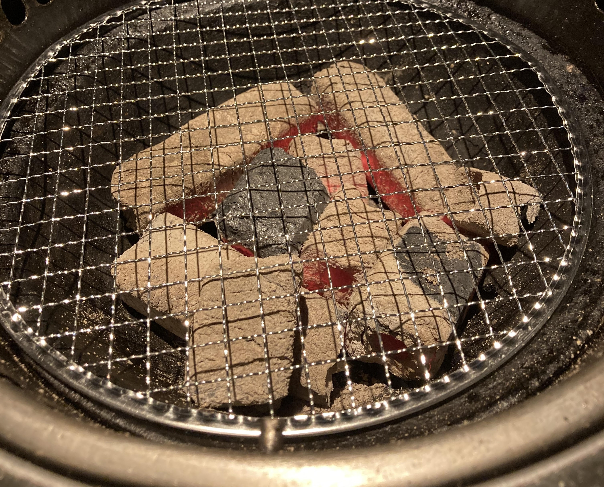

アクセス・当店について
当店について

焼肉 牛工大は、「一流の肉を格安で」をモットーに、最高品質のお肉をリーズナブルな価格で提供しております。
しちりんを使った本格炭火焼きで、素材の旨味を引き出し、忘れられない美味しさをお届けします。
店内の雰囲気

和風の落ち着いた雰囲気の店内で、ゆったりとお食事をお楽しみいただけます。個室や大人数でご利用いただけるお席もご用意しております。
本格炭火焼き

当店では最高品質の炭を使用し、お肉の旨味を最大限に引き出します。
サービスの特徴
- 最新鋭の換気システムで煙を気にせず快適
- オーダーはタッチパネルで簡単スムーズ
- キャッシュレス決済で10%オフ
- お子様連れ歓迎、キッズメニューも充実
アクセス
住所: 〒000-0000 焼肉市美食町1-2-3
電話番号: 000-456-7890
営業時間: 平日 11:00〜22:00（ラストオーダー21:30）
土日祝日 10:00〜23:00（ラストオーダー22:30）
定休日: 毎週水曜日
最寄り駅: JR焼肉線「美食駅」東口より徒歩5分
駐車場: 店舗裏に専用駐車場（10台分）あり